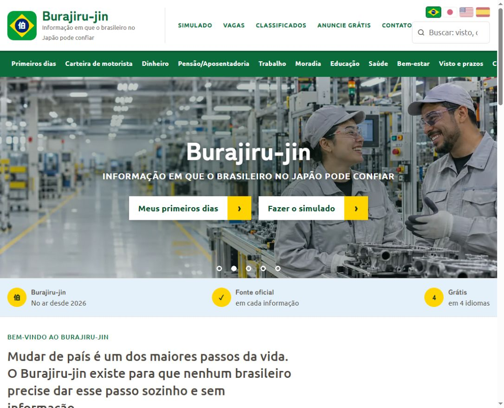

PORTAL DE INFORMAÇÃO E FERRAMENTAS
Burajiru-jinブラジル人
Um guia gratuito criado para ajudar brasileiros no Japão a encontrar informações e ferramentas úteis para o dia a dia.
- Guias sobre trabalho, moradia, educação e primeiros dias no país.
- Simulado da carteira de motorista, calculadoras e outras ferramentas gratuitas.
- Conteúdo em português, japonês, inglês e espanhol.